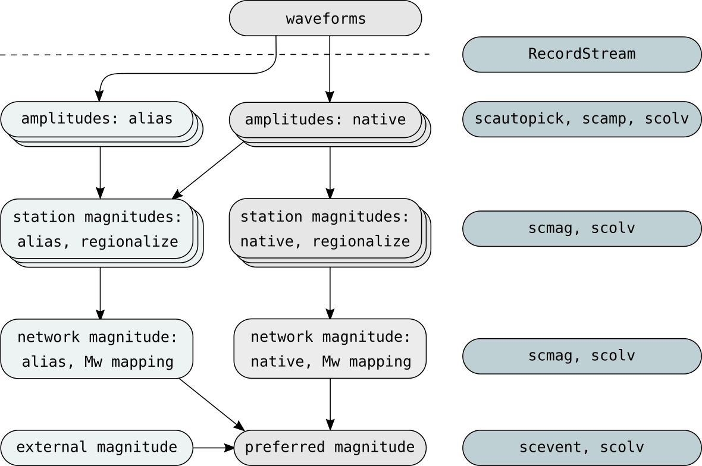

Amplitudes and Magnitudes¶
Magnitudes of specific types are computed from amplitudes measured on waveforms. Different types of amplitudes and magnitudes are available including aliases. All magnitudes can be regionalized and mapped to Mw. The native amplitude and magnitudes types are listed in scamp and scmag.
All amplitude and magnitude values can be read in the Magnitudes tab of scolv, in bulletins created by scbulletin and dumped from database to XML for an origin or event by scxmldump.
This concept section describes the principles applied in SeisComP and links to more specific sections including tutorials describing the configuration and application.

Schematic processing flow for computing magnitudes from measured amplitudes including the involved SeisComP modules and interfaces. Multiple network magnitude types can be computed for the same origin. The default processing of native amplitudes and magnitudes in the center can be extended by aliases, regionalization, Mw mapping or external magnitudes.¶
Amplitudes¶
Amplitudes can be measured on waveforms
Automatically during phase picking by scautopick with generally fixed time windows due to the absence of knowledge about source parameters.
Automatically by scamp as soon as origins are available. Depending on the amplitude type and their configuration, fixed or distance-dependent time windows as well as constraints on signal quality apply.
Interactively using scolv with preset or user-defined conditions.
Time grammar applies for configuring the time windows.
Input data¶
Depending on type amplitudes are measured on raw or filtered waveform data.
Initial raw data are given in counts of the digitizer with a stream gain unit of
m/s which is typical for seismometers.
It is assumed that the measured signal has its dominant
frequency where the response of the recording instrument is flat.
For other instruments such as accelerometers or short-period geophones, amplitude
correction for instrument response and the corresponding frequency range may be
configured by the global binding parameters
amplitudes.enableResponses, amplitudes.resp.minFreq,
amplitudes.resp.maxFreq or even with in amplitude-type profiles for
more specific application. Amplitude measurements will fail if the
unit of the (corrected) input data do not correspond to the requirement of the
amplitude type.
Filtering may involve simulation of Wood-Anderson seismographs. Final amplitude measurements are corrected by stream gain and provided as an amplitude object.
Wood-Anderson simulation¶
Some amplitude types require or allow the correction of waveforms by simulation
of instruments such as Wood-Anderson torsion seismometers
(Richter [67], Uhrhammer and Collins [74]), WWSSN_SP() or WWSSN_LP().
The calibration parameters describing a Wood-Anderson seismometer are
configurable in global bindings or module configuration:
amplitudes.WoodAnderson.gain, amplitudes.WoodAnderson.T0,
amplitudes.WoodAnderson.h. Specifically, the difference in magnitude
due to configuration using original values listed in
Richter [67] and updated ones given in Uhrhammer and Collins [74]
result in a constant offset of 0.13 in those magnitudes which apply
Wood-Anderson simulation, e.g. ML,
MLv, MLc.
Physical units¶
The physical units of measured amplitudes depend on amplitudes type. They are documented along with the corresponding magnitude type. Starting with the initial gain unit of raw data streams, typically m/s, the amplitude processor in SeisComP converts to the required unit. Where instrument simulation if optional, e.g., for MLc amplitudes, a conversion configurable factor must be considered for non-default amplitude processing.
Amplitude Aliases¶
New amplitude types (aliases) can be created based on existing amplitude types but configured and measured specifically. They can be measured as any other amplitude by scamp or scautopick and used by other modules, e.g., by scmag for magnitude aliases. The setup procedure is outlined in the tutorial on amplitude aliases.
Regionalization¶
Measuring amplitudes only for sources or pairs of sources and stations in specific regions is supported by regionalization. The region polygons are defined by magnitude regionalization. In order to use the feature, regionalized amplitudes and magnitudes must have the same type (name) and regionalization must be activated per amplitude type in amplitude-type profiles of global bindings.
Station Magnitudes¶
Station magnitudes are computed automatically by scmag or interactively by scolv from measured amplitudes based on distance-dependent calibration curves which depend on magnitude type. Since distance measures are required, station magnitudes are always related to one origin. For computing new magnitudes in scolv, a new origin must be created which is done by relocating.
When computing a set of station magnitudes in scolv which is different from the set configured in scmag, then scmag may later add the missing magnitudes automatically. Magnitude types for which the evaluation status is set to “rejected”, e.g., in scolv, will not be recomputed by scmag. In order to ignore a magnitude type interactively, it should therefore be treated and rejected in scolv.
Station corrections¶
Linear station corrections applied to station magnitudes can be configured by global binding parameters:
Add a magnitude type profile where the name of the profile is the name of the magnitude itself,
Configure the correction parameters.
When using binding profiles, all referencing stations will be affected equally which is typically not intended. In contrast, applying station bindings requires to set up many bindings which may not be intended either.concepts-magnitudes-regionalization
Therefore, you may add lines to the global module configuration in
global.cfg where one line corresponds to one station with one magnitude
and the corresponding correction parameter. The groups and the name of the
parameters are identical to the global bindings parameters. All lines start with
“module.trunk”. Example for an offset correction of
MLv measured station GE.UGM:
module.trunk.GE.UGM.magnitudes.MLv.offset = 0.1
Note
The configuration of parameters starting with module.trunk. is not
supported by scconfig. All corresponding configurations must be done
by direclty editing the configuration file, e.g.,
seiscomp/etc/global.cfg.
Magnitude Aliases¶
New magnitude types (aliases) can be created inheriting the configuration parameters but not the configured values from existing magnitude and amplitude types or amplitude aliases. The values are configured specifically. Unless specified explicitly, the amplitude type is the base amplitude of the original magnitude. Other amplitude types or amplitude aliases must be defined first and given explicitly. The aliased magnitudes can be computed by other modules such as scmag or scolv. The setup procedure is outlined in the tutorial on magnitude aliases.
Regionalization¶
The computation of station magnitudes can be regionalized. This means that for a specific region specific conditions apply when computing magnitudes. The conditions include any parameter available for configuring a magnitude including global binding parameters such as magnitude calibration, distance and depth ranges, etc. As an example you may wish to apply different attenuation curves for computing MLv magnitudes to earthquakes in Eastern and in Western Canada.
Regionalization is achieved by adding magnitude-type profiles in the magnitudes section of global module configuration parameters. Regionalization assumes defaults from global bindings but overrides the values when configured. The setup procedure including station corrections is outlined in the tutorial on regionalization.
Network Magnitudes¶
Network magnitudes are computed automatically by scmag or interactively
by scolv from station magnitudes based on averaging station magnitudes.
The averaging methods applied by scmag are configurable by
magnitudes.average. Available are (Rosenberger and Gasko [69]):
mean: The mean value from all station magnitudes.
median: The mean value from all station magnitudes.
trimmedMean(X): Ignores outlier station magnitudes by first removing the largest and the smallest X % of the observed values (percentiles). The mean is formed from the remaining station magnitudes.
trimmedMedian(X): Forms the median from all station magnitudes but returns the uncertainty by ignoring the largest and the smallest X % station magnitudes.
medianTrimmedMean(X): Returns the mean magnitude from all station magnitudes differing less than X magnitudes from the median.
Moment Magnitudes¶
Moment magnitudes can be derived from all other network magnitudes by mapping of the original network magnitude, e.g., Mx, to a new moment magnitude Mw(Mx).
The mapping function can be configured for all original magnitude types except mB and Mwp where the mapping is hardcoded. Read the tutorial on moment magnitudes for the configuration.
Summary Magnitude¶
In order to account for different phenomena related to magnitude computation including magnitude saturation and application of different magnitude types at specific distance and depth ranges of the sources a summary magnitude can be computed from network magnitudes by scmag. The summary magnitude is usually referred to as M. The name is configurable.
Note
Station, network and summary magnitudes are contained uniquely in one origin.
Preferred Magnitude¶
From the list of computed network magnitudes and the summary magnitude, scevent can automatically determine the preferred magnitude of the event. This may also be done interactively by operators in the Event tab of scolv or by custom commit buttons in scolv.